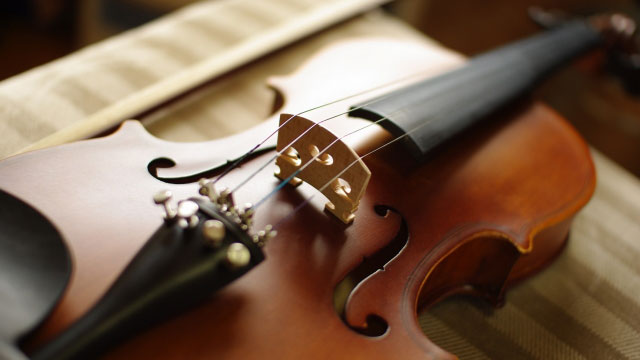

突然ですが皆さんはクラシック音楽、お好きですか？ こう聞いて最も多い答えは、「好き」でも「嫌い」でもなく、「特に好き嫌いなし」だと思います。J-POPやロック、R＆Bのようなジャンルであれば、「好き嫌い」がはっきりするのでしょうが、クラシックの場合、それ以前に「興味が無い」あるいは「分からない」となることが多いようです。その理由の一つとして挙げられるのが、「聞き所」の分かりづらさでしょう。楽譜が読めたり楽器を弾けたりしない限り、クラシックの曲は耳障りよく流れていくだけです。オペラや歌曲以外は歌も入っておらず、「サビ」もありません。ですから、意識していないととたんにBGMと化してしまいます。さらに、演奏される曲は基本的に何百年も前に作曲された定番ばかり。新曲が出ることはあまりありません。
このような難点にもかかわらず、クラシックのCDは毎月山のように発売されています。すごいときには、たとえばベートーヴェンの交響曲5番『運命』だけで5枚も10枚も新規発売されるのです。これは当然、指揮者とオーケストラの組み合わせが異なる新録音なわけですが、あまりクラシックを聴かない人にとっては、5枚のCDすべて同じように聞こえてしまうでしょう。
私がクラシックを本格的に聴き始めたのは中学生の頃です。そして、聴き始めるきっかけとなったのが上述した疑問でした。AというCDとBというCDのなにが違うんだろう。これが知りたくて、同じ曲を二枚買って聞き比べてみるのですが、なかなか分かりません。しかし、曲を覚え、何度も聞き返すうちに、テンポや各楽器の音量など、微妙な違いが浮かび上がってくるようになりました。すると俄然おもしろくなってきます。自分の理想の演奏に近いものを探して、大学時代などは毎月何十枚もCDを買うようになりました。（クラシックのCDは基本的にはとても安いのです）。
かなりどっぷりクラシックにはまるようになったにもかかわらず、相変わらず私は楽譜が読めません。しかし、楽譜が読めない一方で、クラシックにまた別の楽しみ方を発見しました。それは、「歴史」です。
クラシック音楽は、17世紀、18世紀の西欧教会音楽からスタートし、王や貴族の宮廷で娯楽として享受されたのち、19世紀には上流市民に公開される「芸術」となりました。その変化の過程は西ヨーロッパの近代史そのものであるといえます。たとえば、チャイコフスキーのオーケストラ曲に「1812年」というものがありますが、これはナポレオンのロシア遠征を題材にした曲です。ロシア民謡の旋律とフランスの国歌「ラ・マルセイエーズ」が交互に流れ、変奏を繰り返しながらフィナーレに突入していくという構造は、当時の歴史をある程度知っていれば「ニヤリ」とできるものです。このように、クラシックは音楽でありながら、その背景に分厚い歴史を秘めています。第二次大戦敗戦間近のドイツで演奏されたベートーヴェンの第9（大晦日によく演奏されているあれです）の録音など、当時の状況を知っていれば鳥肌ものでしょう。
「社会なんて勉強しても何の役に立つのか」。そう言われたことも何度かあります。もちろん数学に比べれば頻度はすくないでしょうが…。たしかに、1453年や1789年など、年号を覚えていなくても生きていくことは可能です。なんの不自由もありません。しかし、音楽一つとっても、深く楽しむための切っ掛けとして社会の「学び方」は有用です。クラシックに限らず、ロックやR＆B、ヒップホップ、J-POPに至るまで、意外なところで意外なようにつながっているのです。お子さんが社会嫌いなら、ぜひお子さんの好きな「なにか」の歴史を掘り返してみてください。必ずどこかでつながっているはず！